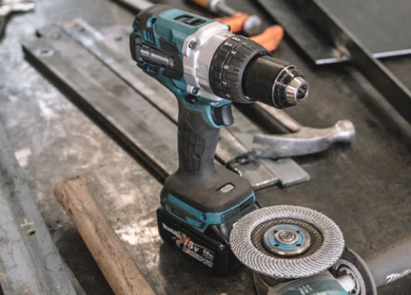

Мы организовали собственное производство
Итак, продолжаем тему о проблемах при проведении тендера и качества изготовленных рекламных изделий. В предыдущей статье мы рассматривали этапы составления тендерного задания, участия в тендере, выборе изготовителя (ознакомиться можно здесь). Итак, продолжаем тему о проблемах при проведении тендера и качества изготовленных рекламных изделий. В предыдущей статье мы рассматривали этапы составления тендерного задания, участия в тендере.
1. Заказ материалов:
Подрядчик начинает изготовление рекламы с заказа требуемых материалов, которые не так уж просто в дальнейшем идентифицировать.
Например: листовые материалы – пластики, акрилы, алюминиевый композитный материал, профнастил – предоставляются в защитной брендированной плёнке, которая после фрезеровки снимается. И в дальнейшем очень сложно отличить качественный пластик от фальсификата, а в большинстве случаев – вообще невозможно.
2. Заказ материалов:
Подрядчик начинает изготовление рекламы с заказа требуемых материалов, которые не так уж просто в дальнейшем идентифицировать.
Например: листовые материалы – пластики, акрилы, алюминиевый композитный материал, профнастил – предоставляются в защитной брендированной плёнке, которая после фрезеровки снимается. И в дальнейшем очень сложно отличить качественный пластик от фальсификата, а в большинстве случаев – вообще невозможно.
 Здесь наш фотоотчёт выполненных работ, а так же те работы, которые на сегодня в работе. Главный цех в городе Харьков. Наши работы по всей Украине.
Здесь наш фотоотчёт выполненных работ, а так же те работы, которые на сегодня в работе. Главный цех в городе Харьков. Наши работы по всей Украине.
Итак, продолжаем тему о проблемах при проведении тендера и качества изготовленных рекламных изделий. В предыдущей статье мы рассматривали этапы составления тендерного задания, участия в тендере, выборе изготовителя (ознакомиться можно здесь).

Две частые проблемы плёнок:
а) они трескаются; б) низкого качества клеевой слой, поэтому плёнка отклеивается.
Итак, продолжаем тему о проблемах при проведении тендера и качества изготовленных рекламных изделий. В предыдущей статье мы рассматривали этапы составления тендерного задания, участия в тендере, выборе изготовителя (ознакомиться можно здесь).